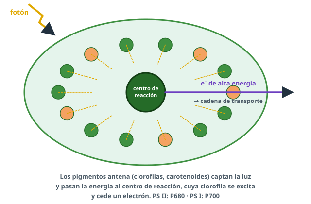
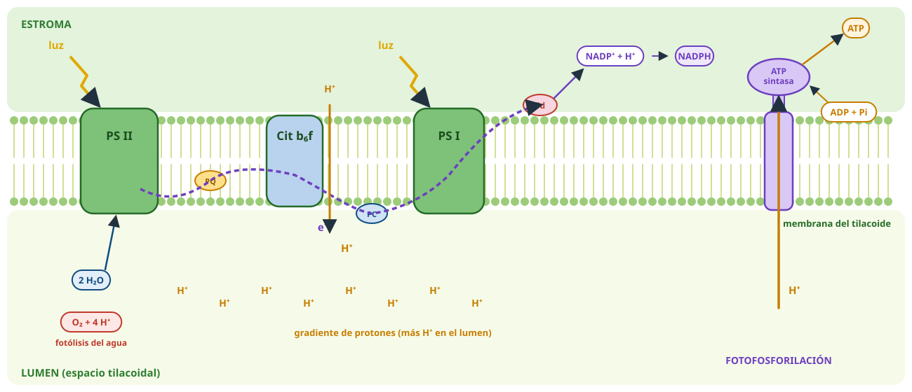
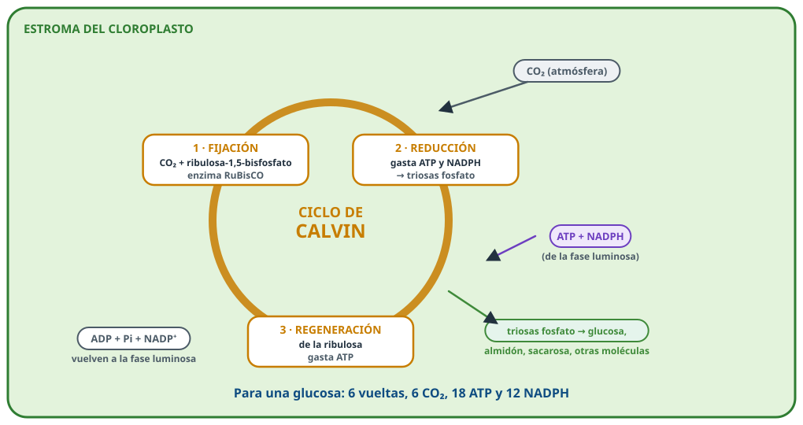
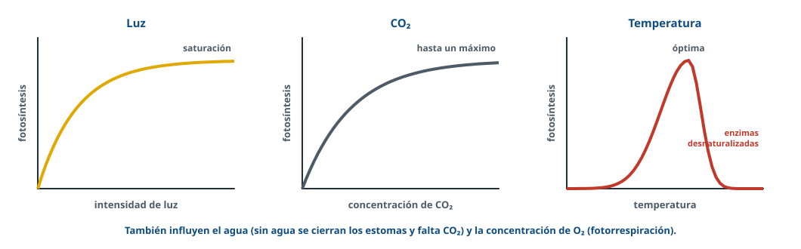
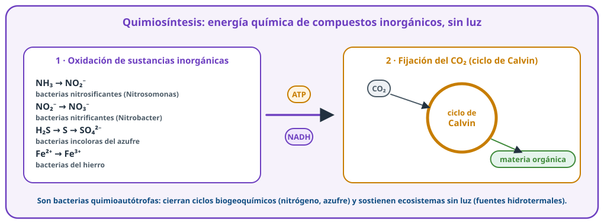

Fabricar con
luz y CO₂
Fotosíntesis y quimiosíntesis: el anabolismo autótrofo.
Usa ← → o el espacio para avanzar · F para pantalla completa
Directrices 26-27 · D.3.2-D.3.3¿Qué nos van a pedir?
Fotosíntesis
Oxigénica y anoxigénica. Sustratos y productos.Dos fases
Fotoquímica (tilacoides) y Calvin (estroma). Sin intermediarios.Quimiosíntesis
Energía de oxidar sustancias inorgánicas. Importancia de ambas.ConceptoLas dos fases
TiposOxigénica y anoxigénica
Oxigénica
Plantas, algas, cianobacterias. Dador de electrones: agua → desprende O₂. Dos fotosistemas.Anoxigénica
Bacterias purpúreas y verdes. Dador: H₂S u otros → sin O₂ (deja azufre). Un fotosistema.Captar la luzEl fotosistema

- Antena: clorofilas y carotenoides captan la luz.
- Centro de reacción: su clorofila se excita y cede un electrón.
- PS II (P680) y PS I (P700), en la membrana de los tilacoides.
D.3.2Fase luminosa

D.3.2Fase luminosa en cuatro procesos
1 · Luz
Los fotosistemas se excitan.2 · Fotólisis
H₂O → O₂ + H⁺ + e⁻ (repone los e⁻ del PS II).3 · Transporte
e⁻ del PS II al PS I y al NADP⁺ → NADPH.4 · ATP
H⁺ al lumen → vuelven por la ATP sintasa: fotofosforilación.CíclicaSolo PS I: produce ATP, pero ni NADPH ni O₂ → sin NADPH no funciona el ciclo de Calvin.
D.3.2Ciclo de Calvin

ComparaciónLuminosa frente a Calvin
| Fase luminosa | Ciclo de Calvin | |
|---|---|---|
| Dónde | Tilacoides | Estroma |
| Entra | H₂O, luz, ADP, NADP⁺ | CO₂, ATP, NADPH |
| Sale | O₂, ATP, NADPH | Glúcidos, ADP, NADP⁺ |
OjoEn la fotosíntesis el último aceptor es el NADP⁺; en la respiración, el O₂. Krebs produce ATP; Calvin lo consume.
FactoresLuz, CO₂ y temperatura

Estomas cerrados por sequía → sin CO₂ → sin ciclo de Calvin.
D.3.2Quimiosíntesis

D.3.3¿Por qué es tan importante?
🌿 Materia orgánica
Productores primarios: alimentan a los heterótrofos.💨 Oxígeno
Atmósfera aerobia y capa de ozono.🌍 CO₂
Lo retira de la atmósfera; combustibles fósiles.Problema¿Sabrías resolverlo?
🧪 Matraz con cianobacterias y matraz con levadura y glucosa: ¿qué gas sale de cada uno? ¿Y en oscuridad? (PAU 2021)
Cianobacterias: O₂ (fase luminosa); en oscuridad, CO₂ (respiración). Levadura: CO₂ (fermentación) en ambos casos.
🌡️ ¿Y a 60 ºC?
No: las enzimas se desnaturalizan.
Luz que se
hace alimento
Repasa los apuntes y practica en Entrenamiento de BioCelia.